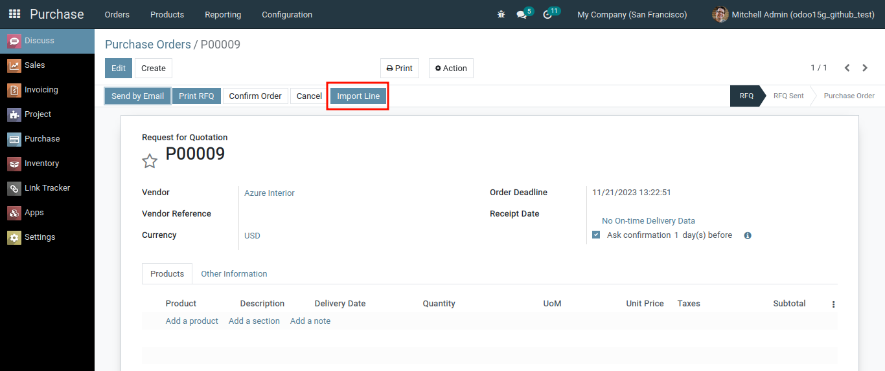
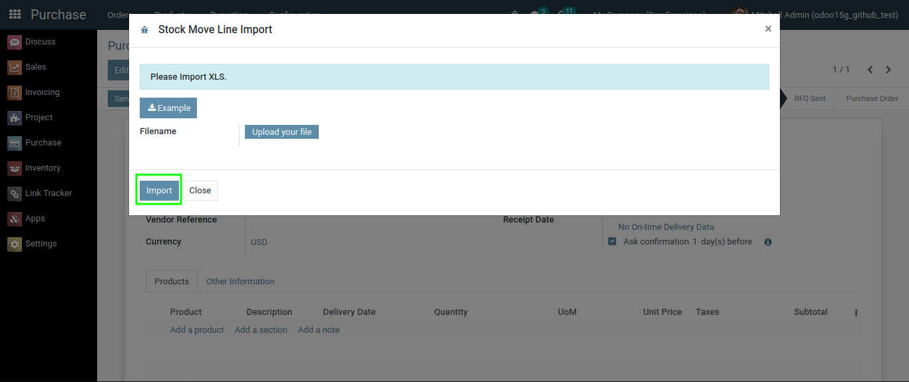

With this module can create lines from Purchase/Sale/Picking by importing, we don't need to add lines from the model by adding one by one again.
To use this module, you must first create a line-less Purchase/Sale/Receipt document. Then click the Import Line button to enter the required data.
If you don't know what excel format is used, please download the example file by clicking the Example button.
If you have prepared the file to be imported and it is in the required format, please upload your file.
Then click the Import button and your file will be immediately processed and made into a line.
Thank you for using this module and for reading to the end of this short documentation.